| role | rows | visibility | used for | identity | |
|---|---|---|---|---|---|
| 0 | released DP-VAE dataset | 1000 | public after the epsilon=2 release | disjoint synthetic candidate and RANDOM-refresh subsets | fabd5ba613d2 |
| 1 | private target | 51000 | private values/labels; fixed role membership is public | DP-VAE training, then digits 0-3 vote once per PE round | public fixed-partition 69b893330c44 |
| 2 | real evaluation | 10000 | public benchmark | TSTR evaluation and exploratory round selection | 8d294bd1e841 |
| 3 | public embedding | 3000 | public | nearest-neighbor geometry and fixed classifier | 345e3234bdbe |
| 4 | public reserves | 6000 | public | frozen source partitions; not used by revised PE example | 8a6778 / 591d5a |
Learned generators: DP-SGD and private evolution
Privately train the generator—or privately steer a public population
The pressure from Lecture 11
One-ways, all pairs, and MWEM supported different declared workloads.
No synthetic table was universally accurate.
Today’s question
Can we preserve structure without naming every statistic?
Exactly where may the private rows influence the result?
Public contract
- Private unit: one labeled MNIST image; adjacency adds or removes one row.
- Private PCA: separate digit-0 and digit-3 branches, composed in parallel.
- DP-VAE: one conditional model trained jointly on digits 0–9.
- Private PCA and DP-VAE: \((\varepsilon,\delta)=(2,10^{-5})\).
- One predeclared evolution run: another \((1,10^{-5})\) on the same target.
- Seed + one PE run: counterfactual \((3,2\times10^{-5})\).
- This deck releases 3 support mechanisms + 5 sweep alternatives: PE \((8,8\times10^{-5})\); with the established seed, the DP-VAE-seed + PE-path aggregate is \((10,9\times10^{-5})\).
- Rank 10 and rank 3 share one private-PCA covariance release; with that release and the separate 60,000-row DP-VAE, all DP-labeled mechanisms compose to \((14,11\times10^{-5})\).
- The deck as a whole is not DP: it deliberately displays exact/nonprivate foils learned from the private target.
- One fixed evaluator suite; private evaluation would need its own mechanism.
Reproducible seeds are not deployment entropy
Private-PCA, DP-SGD, and PE Gaussian-noise seeds are public here only for this public-MNIST lesson. Formal epsilon statements require fresh secret mechanism randomness on confidential data. These frozen seeded artifacts are reproducibility demos, not confidential-data DP releases: never reuse or publish those noise seeds. Sampling/display/resampling/variation seeds used only after a DP release may be public.
All 70,000 rows have one role
Official test rows are public evaluation. They report utility and also select the 5-round diagnostic, so that selected score is exploratory—not held out.
Step 1 — Easier zero, harder three

Untouched public evaluation rows expose the task without displaying a private target row.
Step 2 — PCA becomes a generator
Center \(x_i\in\mathbb R^d\) at \(c\), keep the top \(k\) covariance directions \(U_k\), and write
\[ z_i=U_k^T(x_i-c). \]
PCA is a representation. The generative assumption is \[ z_{\mathrm{new}}\sim\mathcal N(m,C),\qquad \widetilde x=c+U_kz_{\mathrm{new}}. \]
Step 3 — Apply it to MNIST
- Native \(28\times28\) pixels: \(d=784\); no pooling or display upsampling.
- Separate digit-0 and digit-3 models.
- Public per-digit center and common scale \(s=10\).
- Normalize, then clip centered vectors to the unit L2 ball.
- Compare all 784 directions, rank 10, and rank 3.
Exact moments are NONPRIVATE foils. Privacy enters only when Gaussian noise is added to the second moment before its basis is learned.
Step 4 — Empirical covariance, fitted separately
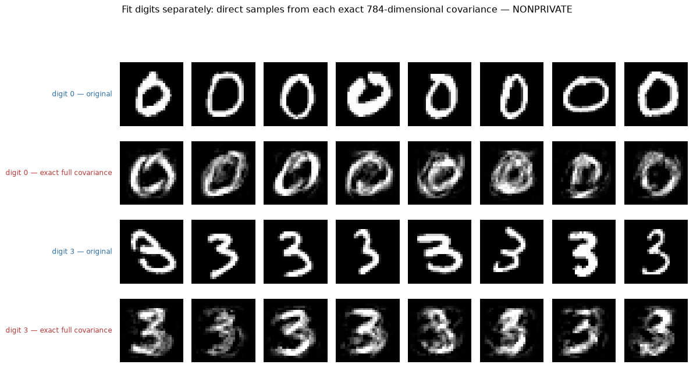
Each digit gets its own exact 784-dimensional Gaussian. Any gap is model error—not truncation or privacy noise.
Step 5 — Rank 10, then privatize
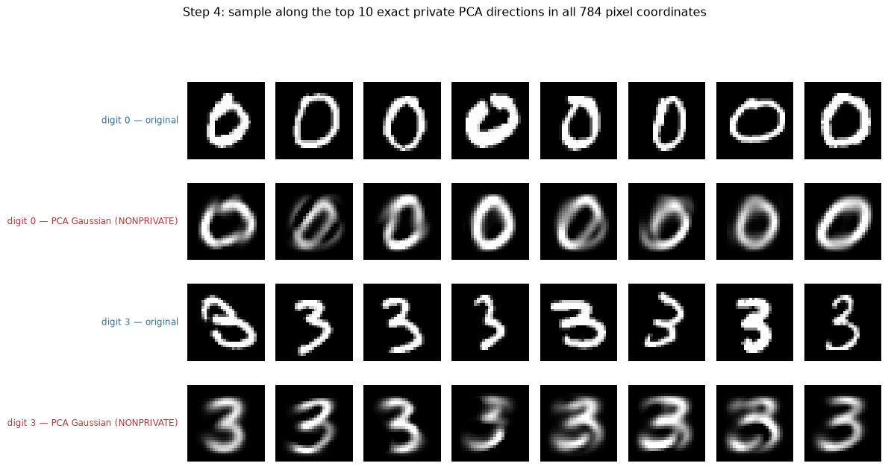
The red rows retain the leading ten exact covariance directions and still make no DP claim.
Learn the basis privately
For digit branch \(a\), with public capacity \(n_{\mathrm{ref}}=6000\):
\[ S_a=\frac1{n_{\mathrm{ref}}}\sum_{i:y_i=a}\bar v_i\bar v_i^T, \qquad \Delta_2 S_a\leq\frac1{6000}. \]
Add symmetric Gaussian noise to the upper triangle, mirror it, project to the PSD cone, and eigendecompose only the noisy matrix.
The basis is learned from private rows; it is not public.
The rank-10 private-PCA contract
| contract field | two-digit noisy-covariance private PCA | |
|---|---|---|
| 0 | artifact status | PUBLIC-BENCHMARK REPRODUCIBILITY ARTIFACT; not a confidential-data DP release. Budget labels are randomized-mechanism targets requiring fresh unreleased entropy; never publish private-noise seeds in deployment. |
| 1 | private query | public predicates y in (0, 3); fixed public n_ref=6000 per branch |
| 2 | adjacency | add/remove one labeled image; it affects at most one digit branch |
| 3 | fixed preprocessing | full 28x28 pixels; subtract a per-digit center from disjoint public rows and divide by public scale 10; no pooling and no public PCA directions |
| 4 | clipping | every normalized centered row is clipped to the unit L2 ball; public-partition normalized 99th percentiles digit 0: q99=0.88; digit 3: q99=0.90 |
| 5 | private matrix | 784x784 second moment n_ref^-1 sum_i v_i v_i^T |
| 6 | sensitivity + noise | upper-triangle L2 sensitivity 0.0002; iid Gaussian scale 0.0004, then mirror |
| 7 | randomized-mechanism target | each branch: (epsilon, delta)=(2, 1e-05); parallel composition |
| 8 | postprocessing | PSD projection -> top 10 eigenvectors -> rescale by public units -> Gaussian sample -> pixel clip |
With fresh secret mechanism entropy, each branch is \((2,10^{-5})\)-DP. Because one row enters at most one digit branch, the two-digit release remains \((2,10^{-5})\) by parallel composition.
Step 6 — Private rank-10 PCA

Red = exact/nonprivate rank 10. Orange = ten directions learned only from the Gaussian-perturbed private second moment.
Step 7 — Lower rank can help under privacy
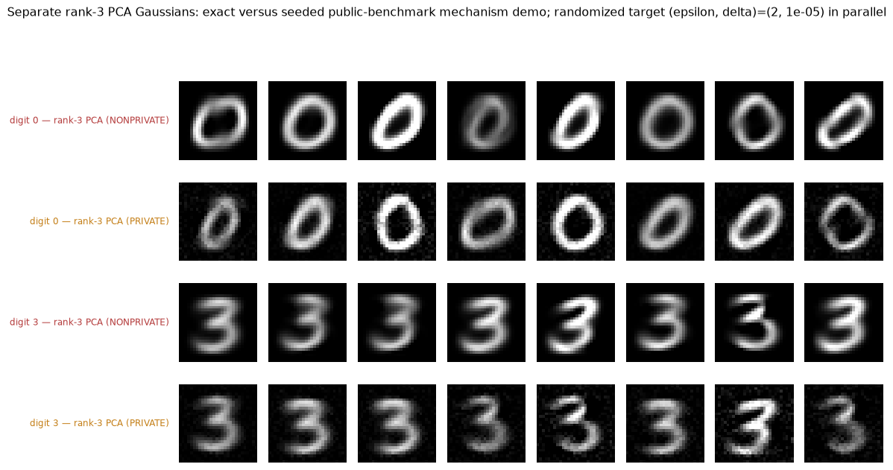
Rank 3 and rank 10 postprocess the same seeded noisy covariance draw, so they share one release rather than spending twice. Lower rank removes variation, but also blocks weak noise-dominated directions.
Step 8 — Remove the digit split
Fit one unconditional Gaussian to all 51,000 private-target images across digits 0–9. There are no per-digit heads or labels after projection.
One Gaussian is unimodal; the digit distribution is not.
Step 9 — Joint empirical covariance
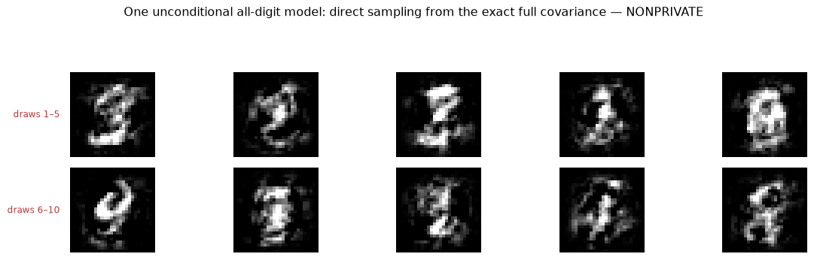
Ten unconditional draws from all 784 exact directions already blend digit modes. This failure is nonprivate.
Step 10 — Joint rank-10 PCA
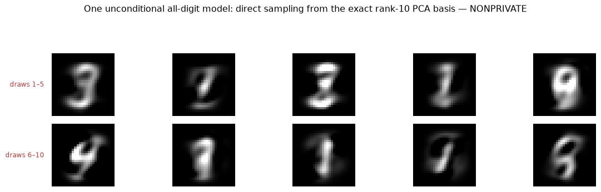
Truncation smooths weak variation but cannot turn one Gaussian into ten modes. A private joint variant would add noise to an already dominant model failure.
Path A — train a nonlinear generator
A single Gaussian cannot share nonlinear stroke families across digit modes.
Could one conditional convolutional VAE?
VAE Step 1 — Encode, sample, decode
Two stride-two convolutions encode spatial strokes; a mirrored transposed-convolution decoder reconstructs them. The public digit label enters the encoder bridge and decoder input.
The encoder outputs a mean and log-variance for \(q_\phi(z\mid x,y)\), not one deterministic code. Reparameterize as \(z=m_\phi+e^{v_\phi/2}\odot\eta\) with \(\eta\sim\mathcal N(0,I)\).
\[ \ell_i=\frac1{784}\left[ -\mathbb E\log p_\theta(x_i\mid z,y_i) +D_{\mathrm{KL}}(q_\phi(z\mid x_i,y_i)\|p(z))\right]. \]
During synthesis the encoder and original image disappear: draw \(y\) uniformly, draw \(z\sim\mathcal N(0,I)\), decode, and hide \(y\).
VAE Step 2 — Nonprivate marginal synthesis
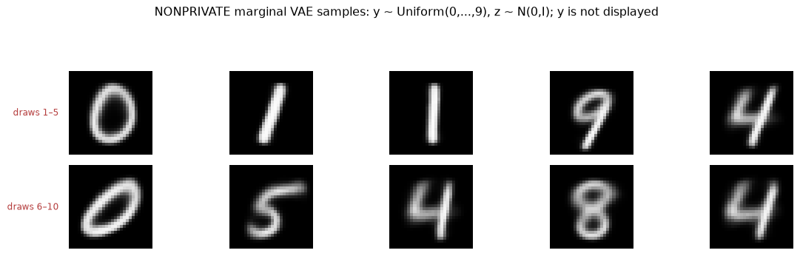
The width-16/latent-2 foil trained jointly on 51,000 private-target rows. The figure is one unlabeled marginal, not ten conditional rows.
Ordinary training accesses private rows and makes no DP claim.
VAE Step 3 — DP-SGD
Include each row independently with public probability \(q\), compute the complete per-example ELBO gradient, clip it to radius \(C\), and release only
\[ \widetilde g_t= \frac{\sum_{i\in S_t}\bar g_i+ \mathcal N(0,\sigma_g^2C^2I)} {qN_{\mathrm{ref}}}. \]
Sampling, clipping, noise, normalization, and accounting must describe the same mechanism.
The full-data DP-SGD contract
| contract field | nonprivate VAE | private VAE | |
|---|---|---|---|
| 0 | artifact status | explicitly NONPRIVATE public-benchmark foil | PUBLIC-BENCHMARK REPRODUCIBILITY ARTIFACT; not a confidential-data DP release. Budget labels are randomized-mechanism targets requiring fresh unreleased entropy; never publish private-noise seeds in deployment. |
| 1 | training access | exact access to 51,000 private-target rows; NONPRIVATE foil | DP-SGD on all 60,000 MNIST training rows |
| 2 | model | conditional VAE, latent width 2 | conditional VAE, latent width 8 |
| 3 | inference distribution | draw y uniformly from 0–9, draw z from N(0,I), hide y | draw y uniformly from 0–9, draw z from N(0,I), hide y |
| 4 | privacy / randomized-mechanism target | none | (epsilon, delta)=(2.00, 1e-05) |
True Poisson inclusion, \(q=0.1\), 400 updates, \(C=0.5\), noise multiplier 4.121, learning rate 0.25, momentum 0.9, and public denominator \(qN_{\mathrm{ref}}=6{,}000\).
The PLD accountant reports \((2.000,10^{-5})\). The width-32/latent-8 model starts from random weights and treats all 60,000 official training rows as private.
VAE Step 4 — Private marginal synthesis
| method | rows | requested-label consistency | class coverage | mean confidence | |
|---|---|---|---|---|---|
| 0 | nonprivate VAE | 1000 | 0.956 | 1.0 | 0.925 |
| 1 | private VAE | 1000 | 0.936 | 1.0 | 0.821 |
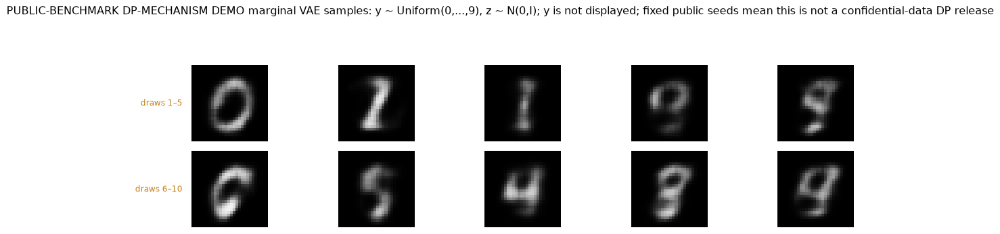
Seed 20270729 fixes one shared requested-digit vector and independent latent streams. Both marginals cover all ten predicted classes.
This is not a controlled privacy comparison
- Nonprivate: 51,000 rows; bridge/latent widths 16/2; no DP claim.
- Private: 60,000 rows; bridge/latent widths 32/8; \((2,10^{-5})\)-DP.
- Shared: uniform-digit marginal inference and 1,000 displayed-release rows.
The panels demonstrate two marginal generators. They do not isolate privacy noise under matched training rows or model capacity.
Frozen evidence, stated narrowly
- The established 51,000-row three-model diagnostic has hash-checked weights.
- Its legacy loss, gradient-norm, and clipping traces are internal non-DP maintainer diagnostics—not released evidence or part of formal epsilon.
- The new 60,000-row private weights and samples are hash checked.
- That appendix packages no training trace; its receipt says the later control was interrupted.
The deck and notebook run inference only; neither invokes training.
Supplementary matched two-digit diagnostic
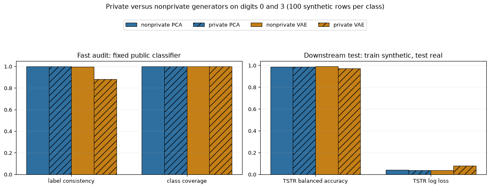
Within each metric: nonprivate PCA, private PCA, nonprivate VAE, private VAE. All use digits 0 and 3, 100 synthetic rows per class, and the same untouched evaluation rows. The VAE pair here is the established 51,000-row architecture, not the unmatched marginal pair above.
Two evaluation questions
- Fixed classifier: does each row resemble its claimed label, and do both classes appear?
- TSTR: train a new classifier on synthetic rows, then test on untouched real rows.
Neither evaluator proves privacy. The formal ledger is the proof.
Start from the released private generator
Its 1,000 DP-VAE samples are public inputs to the next stage.
Private examples remain local and cast bounded votes to improve that seed.
Private Evolution
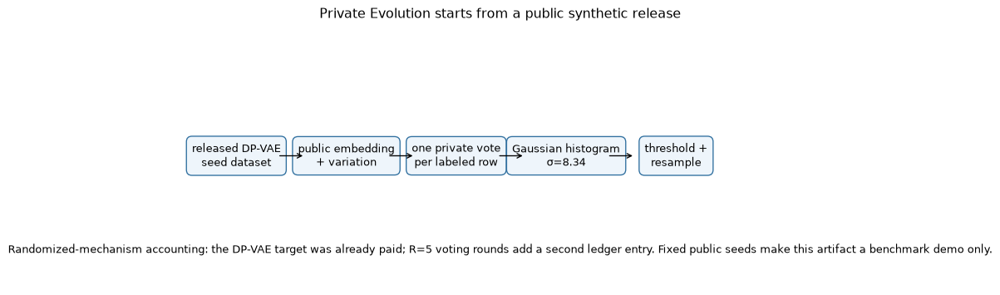
Public work carries representation
- One half of the released DP-VAE rows supplies RANDOM refreshes.
- The disjoint half supplies the vote menu.
- Public PCA supplies a fixed distance geometry.
- Non-cropping one-pixel 2D translations supply bounded variation.
The synthetic refresh and candidate identities are disjoint.
The private interface is only the labeled voting histogram.
One bounded vote
Each labeled private record votes for its nearest same-label candidate.
\[\Delta_1 h=\Delta_2 h=1.\]
Duplicate candidates are coalesced for search, then a stable private-row hash shares their votes without first-index bias. Each row still casts one vote.
A neighboring-dataset calculation
Suppose three private points vote \((2,1)\) over two candidates.
Remove the last point: the histogram becomes \((2,0)\).
The difference is \((0,1)\), so \(\lVert h(D)-h(D')\rVert_1=\lVert h(D)-h(D')\rVert_2=1\).
Five Gaussian rounds
PLD calibration gives \(\sigma=8\.34\) for evolution-stage cost \((\varepsilon,\delta)=(1,10^{-5})\).
Together with the seed, \((3,2\times10^{-5})\) is the counterfactual bound only if this is the sole PE mechanism released.
Threshold, resample, vary
Within-class family-wise false-support rule:
\[ \tau_{r,c}=\sigma_{\mathrm{PE}}\Phi^{-1}(1-0.05/B_{r,c}),\qquad w_j=\max\{\widetilde h_j-\tau_{r,c},0\}. \]
Normalize and resample within labels. A one-pixel 2D translation is rejected if it would crop ink, and each class refreshes 25% from its disjoint released DP-VAE pool. These are postprocessing.
The ex-ante feasibility gate
| public pool | artifact status | shift modes | public lower bound: private rows / class | candidates / class | expected votes / candidate | Gaussian sigma | threshold | support audit | |
|---|---|---|---|---|---|---|---|---|---|
| 0 | matched | PUBLIC-BENCHMARK REPRODUCIBILITY ARTIFACT; not a confidential-data DP release. Budget labels are randomized-mechanism targets requiring fresh unreleased entropy; never publish private-noise seeds in deployment. | -6, +0, +6 | 5000 | 45 | 111.111111 | 8.341979 | 25.516481 | all target modes present |
| 1 | recoverable | PUBLIC-BENCHMARK REPRODUCIBILITY ARTIFACT; not a confidential-data DP release. Budget labels are randomized-mechanism targets requiring fresh unreleased entropy; never publish private-noise seeds in deployment. | -6, +0, +6 | 5000 | 45 | 111.111111 | 8.341979 | 25.516481 | all target modes present |
| 2 | support-gap | PUBLIC-BENCHMARK REPRODUCIBILITY ARTIFACT; not a confidential-data DP release. Budget labels are randomized-mechanism targets requiring fresh unreleased entropy; never publish private-noise seeds in deployment. | -6, +0 | 5000 | 45 | 111.111111 | 8.341979 | 25.516481 | missing +6; 5 < 6 |
The predeclared public feasibility assumption is at least 5,000 private rows per declared class. With 45 public candidates, its uniform-load proxy is at least 111.1 votes per candidate and must clear \(3\sigma\) in every declared condition. The mechanism neither reads nor releases observed private class counts, and the lower bound is not verified with a private count.
No favored survivor, seed, or utility result is required.
One fixed 50-round process
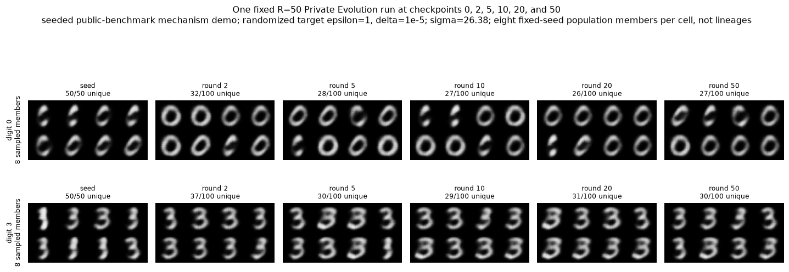
The columns are checkpoints from one mechanism calibrated for 50 compositions. Each cell shows eight fixed-seed population members, not a tracked lineage, at rounds 0, 2, 5, 10, 20, and 50.
Compare complete mechanisms
| rounds | artifact status | histograms composed in this run | population / class (unique) | evaluation rows / class | Gaussian sigma / round | randomized PE mechanism target (epsilon, delta) | label consistency | class coverage | TSTR balanced accuracy | TSTR log loss | |
|---|---|---|---|---|---|---|---|---|---|---|---|
| 0 | 0 | PUBLIC-BENCHMARK REPRODUCIBILITY ARTIFACT; not a confidential-data DP release. Budget labels are randomized-mechanism targets requiring fresh unreleased entropy; never publish private-noise seeds in deployment. | 0 | 50 (50 unique) | 50 | 0.000 | (0, 0) | 0.910 | 1.000 | 0.976 | 0.076 |
| 1 | 2 | PUBLIC-BENCHMARK REPRODUCIBILITY ARTIFACT; not a confidential-data DP release. Budget labels are randomized-mechanism targets requiring fresh unreleased entropy; never publish private-noise seeds in deployment. | 2 | 100 (37 unique) | 50 | 5.276 | (1, 1e-05) | 0.950 | 1.000 | 0.976 | 0.072 |
| 2 | 5 | PUBLIC-BENCHMARK REPRODUCIBILITY ARTIFACT; not a confidential-data DP release. Budget labels are randomized-mechanism targets requiring fresh unreleased entropy; never publish private-noise seeds in deployment. | 5 | 100 (32 unique) | 50 | 8.342 | (1, 1e-05) | 0.980 | 1.000 | 0.981 | 0.066 |
| 3 | 10 | PUBLIC-BENCHMARK REPRODUCIBILITY ARTIFACT; not a confidential-data DP release. Budget labels are randomized-mechanism targets requiring fresh unreleased entropy; never publish private-noise seeds in deployment. | 10 | 100 (32 unique) | 50 | 11.797 | (1, 1e-05) | 0.920 | 1.000 | 0.977 | 0.071 |
| 4 | 20 | PUBLIC-BENCHMARK REPRODUCIBILITY ARTIFACT; not a confidential-data DP release. Budget labels are randomized-mechanism targets requiring fresh unreleased entropy; never publish private-noise seeds in deployment. | 20 | 100 (28 unique) | 50 | 16.684 | (1, 1e-05) | 0.960 | 1.000 | 0.977 | 0.070 |
| 5 | 50 | PUBLIC-BENCHMARK REPRODUCIBILITY ARTIFACT; not a confidential-data DP release. Budget labels are randomized-mechanism targets requiring fresh unreleased entropy; never publish private-noise seeds in deployment. | 50 | 100 (27 unique) | 50 | 26.380 | (1, 1e-05) | 0.970 | 1.000 | 0.971 | 0.080 |
The rows at 2, 5, 10, 20, and 50 are final outputs from separately calibrated mechanisms—not checkpoints from the 50-round run. Each alternative uses independent fixed public-MNIST streams for Gaussian noise, resampling, and variation; no Gaussian draw is reused across alternatives.
The seed has 50 actual rows per class, evolved populations have 100, and every alternative is evaluated on 50 rows per class without replacement inflation.
Two honest composition questions
- One predeclared \(R>0\) alone: PE \((1,10^{-5})\); with seed \((3,2\times10^{-5})\).
- This notebook releases three support-condition mechanisms plus five sweep alternatives: PE \((8,8\times10^{-5})\).
- With the established seed, the DP-VAE-seed + PE-path aggregate is \((10,9\times10^{-5})\).
- Adding the shared private-PCA release and separate 60,000-row DP-VAE gives \((14,11\times10^{-5})\) across every mechanism labeled DP.
- The notebook as a whole remains non-DP because it displays exact/nonprivate foils.
- Selecting after inspection does not erase the other seven PE costs.
The public evaluation rule selects \(R=5\); the diagnostic reuses that release without a ninth private run. The same public evaluation set selects and reports it, so the utility number is exploratory rather than held out.
Add the defined release to the diagnostic
Only after defining the mechanism, independent sweep, composition, and selection rule do we add its selected release to the common footing.
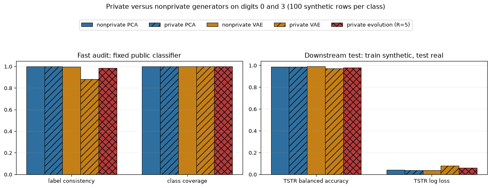
Public variation operators
- one-pixel 2D shift per round, rejected rather than allowed to crop ink;
- class-stratified 25% RANDOM refresh from the disjoint, condition-matched DP-VAE seed subset.
No private embedding leaves the mechanism.
Three released-seed support conditions
Each target row’s mode is a row-local SHA-256 hash of its own fixed public identity before voting. Deleting another row cannot reassign any remaining row’s mode.
Matched: \((15,15,15)=45\) candidates per class.
Recoverable mismatch: \((30,10,5)=45\); all modes, wrong weights.
Support gap: \((25,20,0)=45\); the +6-pixel mode is absent.
Start at the seed; then evolve
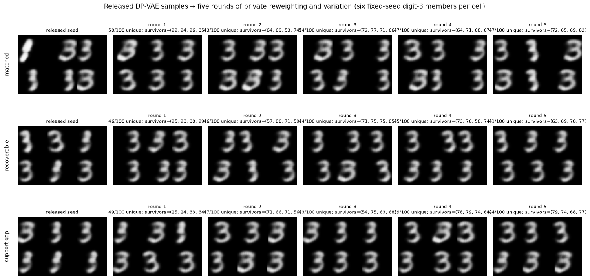
Matched and recoverable seeds contain all three target shifts. The support-gap seed omits the \(+6\) mode.
What happened in the recoverable rounds
| round | artifact status | population size | unique population rows | survivors by class | threshold | |
|---|---|---|---|---|---|---|
| 0 | 1 | PUBLIC-BENCHMARK REPRODUCIBILITY ARTIFACT; not a confidential-data DP release. Budget labels are randomized-mechanism targets requiring fresh unreleased entropy; never publish private-noise seeds in deployment. | 400 | 174 | 25 / 23 / 30 / 29 | 25.516481 |
| 1 | 2 | PUBLIC-BENCHMARK REPRODUCIBILITY ARTIFACT; not a confidential-data DP release. Budget labels are randomized-mechanism targets requiring fresh unreleased entropy; never publish private-noise seeds in deployment. | 400 | 173 | 57 / 80 / 71 / 59 | 27.449504 |
| 2 | 3 | PUBLIC-BENCHMARK REPRODUCIBILITY ARTIFACT; not a confidential-data DP release. Budget labels are randomized-mechanism targets requiring fresh unreleased entropy; never publish private-noise seeds in deployment. | 400 | 177 | 71 / 75 / 75 / 85 | 27.449504 |
| 3 | 4 | PUBLIC-BENCHMARK REPRODUCIBILITY ARTIFACT; not a confidential-data DP release. Budget labels are randomized-mechanism targets requiring fresh unreleased entropy; never publish private-noise seeds in deployment. | 400 | 175 | 73 / 76 / 58 / 74 | 27.449504 |
| 4 | 5 | PUBLIC-BENCHMARK REPRODUCIBILITY ARTIFACT; not a confidential-data DP release. Budget labels are randomized-mechanism targets requiring fresh unreleased entropy; never publish private-noise seeds in deployment. | 400 | 172 | 63 / 69 / 70 / 77 | 27.449504 |
Survivor counts, population size, and unique rows diagnose concentration and diversity. They are not stopping rules; the run consumes all five predeclared rounds.
What the gate does—and does not say
Expected votes per candidate clear \(3\sigma\) ex ante.
Post-threshold survivor diversity is diagnostic, not a stopping rule.
All five rounds are charged even if an intermediate image looks good.
Private steering cannot invent absent public variation.
Mechanical reachability audit
Five rounds × one pixel per round \(=5<6\) pixels.
The missing mode remains unreachable with strict slack.
Common footing before scores
- Public-evolution control: DP-VAE already spent \((2,10^{-5})\); resample and vary without a new private query.
- DP-VAE + Private Evolution: noised votes query the same target again; counterfactual seed-plus-one-run bound \((3,2\times10^{-5})\).
- VAE controls: private access; no DP claim.
Across all eight PE mechanisms displayed here, the DP-VAE-seed + PE-path aggregate is \((10,9\times10^{-5})\). With the shared private-PCA release and separate 60,000-row DP-VAE, the all-DP-labeled bound is \((14,11\times10^{-5})\).
Name the public resources
| method | private_access | public_resources | dp_release | principal_limitation | |
|---|---|---|---|---|---|
| 0 | nonprivate VAE foil | ordinary training on private target | architecture and hyperparameters | none | not private |
| 1 | clipped-only VAE | Poisson sampling and clipped gradients | architecture and hyperparameters | none | clipping alone is not DP |
| 2 | DP-VAE | per-example clipped/noised training | architecture and hyperparameters | trained weights | clipping and gradient noise |
| 3 | DP-VAE public-evolution control | none after the earlier DP-VAE release | released synthetic candidates and bounded variation | DP-VAE weights/samples at epsilon=2 | seed mismatch; no target steering |
| 4 | DP-VAE + Private Evolution | same target in DP-SGD, then one bounded vote per row/round | same released seed, refresh pool, rounds, variation, output size | DP-VAE release + Gaussian vote histograms | cannot create missing support |
Scores are comparable within the raw-VAE panel and within the shifted public-steering panel—not as one equal-population or equal-budget ranking.
Four reported columns
- Label consistency: fixed public classifier agrees with the released label.
- Class coverage: fraction of declared classes predicted.
- TSTR balanced accuracy: retrain on synthetic; test on real.
- TSTR log loss: real-evaluation probability quality.
All are realized artifact values. There is no test that a preferred method must win. The selected 5-round score uses the same public evaluation set for selection and reporting; it is exploratory, not held out.
Evaluation — private training
| method | privacy / access contract | label consistency | class coverage | TSTR balanced accuracy | TSTR log loss | |
|---|---|---|---|---|---|---|
| 0 | nonprivate VAE | private training; no DP claim | 0.961 | 1.000 | 0.844 | 0.512 |
| 1 | clipped-only VAE | private clipped training; no noise; no DP claim | 0.903 | 1.000 | 0.766 | 0.860 |
| 2 | DP-VAE | randomized-mechanism target: (epsilon, delta)=(2, 1e-05); matches private PCA; frozen seeded output is a public-benchmark demo | 0.900 | 1.000 | 0.771 | 0.839 |
Clipping-only and DP-VAE TSTR are close: 0.764 versus 0.773.
Evaluation — matched steering
| method | privacy / access contract | label consistency | class coverage | TSTR balanced accuracy | TSTR log loss | |
|---|---|---|---|---|---|---|
| 0 | matched DP-VAE public-evolution control | randomized-mechanism target: (epsilon, delta)=(2, 1e-05); frozen seeded output is a public-benchmark demo | 0.978 | 1.000 | 0.749 | 0.821 |
The matched public-evolution control starts from the released DP-VAE and makes no new private query.
Evaluation — recoverable support
| method | privacy / access contract | label consistency | class coverage | TSTR balanced accuracy | TSTR log loss | |
|---|---|---|---|---|---|---|
| 0 | recoverable DP-VAE public-evolution control | randomized-mechanism target: (epsilon, delta)=(2, 1e-05); frozen seeded output is a public-benchmark demo | 0.978 | 1.000 | 0.739 | 0.896 |
| 1 | recoverable DP-VAE + Private Evolution | randomized-mechanism target under simple composition: (epsilon, delta)=(3, 2e-05); DP-VAE + PE; frozen seeded output is a public-benchmark demo | 0.988 | 1.000 | 0.820 | 0.598 |
At the current population scale, private votes raise TSTR balanced accuracy from about 0.738 to 0.812. Read the table for the other realized metrics.
Evaluation — support gap
| method | privacy / access contract | label consistency | class coverage | TSTR balanced accuracy | TSTR log loss | |
|---|---|---|---|---|---|---|
| 0 | support-gap DP-VAE public-evolution control | randomized-mechanism target: (epsilon, delta)=(2, 1e-05); frozen seeded output is a public-benchmark demo | 0.978 | 1.000 | 0.651 | 1.819 |
| 1 | support-gap DP-VAE + Private Evolution | randomized-mechanism target under simple composition: (epsilon, delta)=(3, 2e-05); DP-VAE + PE; frozen seeded output is a public-benchmark demo | 0.983 | 1.000 | 0.667 | 1.694 |
Both rows remain limited by missing support. Private votes cannot create the absent \(+6\) mode.
The three errors return
- Representation/support: the model or public pool cannot express the target.
- Private learning/selection: clipping and Gaussian noise distort gradients or votes.
- Finite sampling: released rows fluctuate around the model or weights.
More synthetic rows address only the third.
What remains
- public bias and rare classes;
- representation and provider/API trust;
- target-side tuning leakage;
- evaluation on private holdouts;
- model and attribute-inference diagnostics.
The guarantee
A low attack score is not proof of privacy.
The formal DP ledger is primary.
Lecture 2 attacks remain valuable diagnostics.
Tabular bridge and readings
Deep Learning with Differential Privacy: sample, clip per example, add Gaussian noise, account.
Private Evolution: select, threshold, resample, vary.
DP-VAE term-wise aggregation is a useful comparison; this lecture clips each example’s complete ELBO gradient.
JAM-PGM: public marginal structure, private decision to trust or remeasure.
PMW^Pub, GEM, Aug-PE, DP-MERF, and Tabular Private Evolution extend the map.
DP-MERF does not replace the DP-SGD generative-model beat.